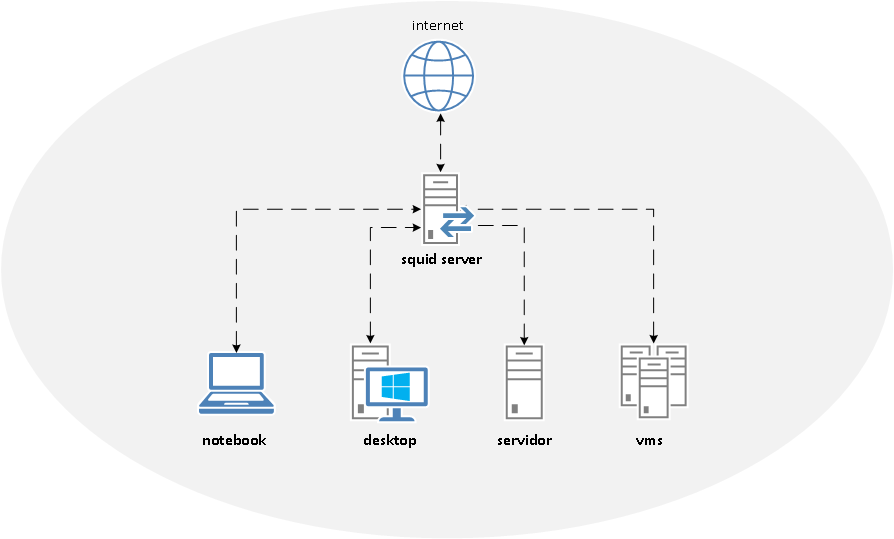
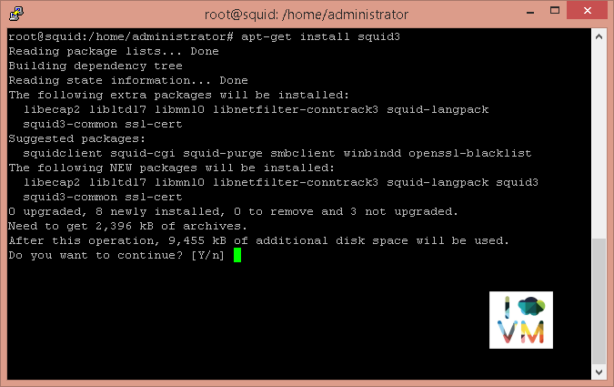
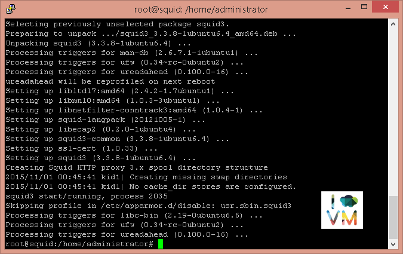
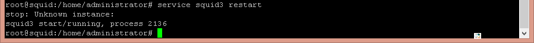
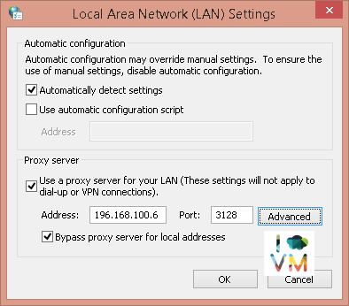
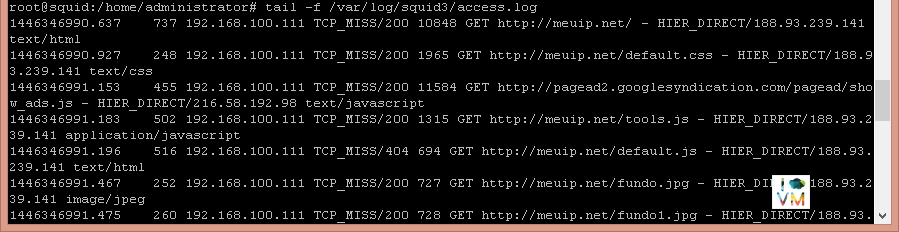

Instalação e configuração proxy Squid no Ubuntu Server
BlogCompartilhe esse post nas redes sociais...
Olá Homelabers!
Nesse post vou mostrar como instalar e configurar o proxy Squid no Ubuntu Server. O Squid é uma ferramenta bastante difundida em várias empresas. Provavelmente você usa o Squid (ou outra solução de proxy) no seu dia-a-dia e nem percebe.
O que é um servidor Proxy?
Um servidor proxy é uma ferramenta importante em uma rede interna que tenha contato com outra pública como a internet, pois implementa uma série de facilidades e controles, de modo a possibilitar que máquinas de uma rede privada possam acessar uma rede pública sem que para isso tenham uma ligação direta.
O Squid é um Servidor proxy cache de alto desempenho que suporta os protocolos HTTP, HTTPS,FTP, TLS, SSL entre outros. Ele é responsável por (entre outras coisas) reduzir o uso da banda e melhorar os tempos de resposta de páginas solicitadas que estão em cache. O Squid tem um grande controle de ACLS (Acces Control Lists ou Lista de Controle de Acesso) sendo muito flexível. Ele aumenta a velocidade de entrega da página solicitada ao cliente. Funciona em Linux, Unix e Windows, é licenciado sob o GNU GPL.
Há uma série de boas razões para uma empresa implementar um servidor proxy em sua rede para o acesso do usuário à Internet. Entre estes estão:
- Monitoramento de sites e os volumes de tráfego
- Restringir o acesso web - por utilizadores, web sites, hora do dia, etc.
- Usando o cache para reduzir os volumes de tráfego
- Gerenciando a largura de banda
Antigamente, quando a internet (ou os links e banda) não eram tão abundantes e baratos como hoje, o uso de um servidor proxy para cache de páginas eram fundamental. Hoje, o seu maior uso é para o controle de acesso.
Para o nosso cenário de HomeLab, a maior vantagem da implementação de um servidor proxy, é eliminar a necessidade de colocar cada VM em uma rede com acesso a internet. Aqui no meu lab, tenho um Squid configurado e todas as VMs apontam para ele.
[caption id=“attachment_735” align=“aligncenter” width=“894”] Topologia do Squid no meu Lab e ao final desse post você terá algo parecido.[/caption]
Vamos lá?
Primeiramente você já deve ter uma VM (ou um servidor/desktop) com o Ubuntu Server instalado - você pode conferir os passos para instalação nesse post.
Minha recomendação para esse cenário é criar uma VM com 1vCPU, 1Gb de RAM e 30Gb de disco. Para fazer a instalação, você deve estar com o usuário root
sudo su
O primeiro passo é realizar a instalação do pacote do Squid3:
apt-get install squid3


O próximo passo é fazer um backup do arquivo squid.conf que é o arquivo de configuração do Squid e está na pasta /etc/squid3
mv /etc/squid3/squid.conf /etc/squid3/squid.conf.original
Feito o backup, vamos criar um novo arquivo squid.conf em branco. Eu gosto de usar o NANO como editor de texto no Linux, mas você pode usar o Vi ou qualquer outro de sua preferencia.
nano /etc/squid3/squid.conf
Você pode copiar e colar o arquivo squid.conf aqui embaixo ou fazer um wget no arquivo que está no meu repositório no GitHub
wget -O squid.conf http://bit.ly/squid-basic-configuration
cp squid.conf /etc/squid3/squid.conf
arquivo squid.conf - copie e cole o texto abaixo no arquivo squid.conf
http_port 3128 #porta em que o squid vai responder as requisições
visible_hostname proxy.homelab.srv.br #altere para o nome que você desejar
#error_directory /usr/share/squid/errors/Portuguese # não vamos utilizar isso agora na configuração básica
hierarchy_stoplist CGI-bin ?
cache_mgr admin@seu_dominio.com.br #coloque o e-mail do administrador do squid
acl QUERY urlpath_regex cgi-bin ?
no_cache deny QUERY
cache_mem 512 MB
maximum_object_size_in_memory 64 KB
maximum_object_size 512 MB
minimum_object_size 0 KB
cache_swap_low 90
cache_swap_high 95
cache_dir ufs /var/spool/squid3 2048 16 256
cache_access_log /var/log/squid3/access.log
refresh_pattern ^ftp: 15 20% 2280
refresh_pattern ^gopher: 15 0% 2280
refresh_pattern . 15 20% 2280
acl all src 0.0.0.0/0.0.0.0
acl localhost src 127.0.0.1/255.255.255.255
acl SSL_ports port 443 563
acl Safe_ports port 21 80 443 563 70 210 280 488 59 777 901 1025-65535
acl purge method PURGE
acl CONNECT method CONNECT
http_access allow manager localhost
http_access deny manager
http_access allow purge localhost
http_access deny purge
http_access deny !Safe_ports
http_access deny CONNECT !SSL_ports
acl rede_local src 192.168.100.0/24
acl palavras_bloqueadas url_regex -i "/etc/squid3/palavras_bloqueadas.txt "
acl sites_bloqueados url_regex -i "/etc/squid3/sites_bloqueados.txt "
acl redes_sociais url_regex -i "/etc/squid3/redes_sociais.txt"
acl liberados src "/etc/squid3/ips_liberados.txt "
acl [*****] url_regex -i "/etc/squid3/sites_porno.txt "
acl formato_arquivo url_regex -i "/etc/squid3/formato_arquivo.txt"
acl horario_almoco time 12:00-13:00
http_access allow liberados
http_access allow redes_sociais horario_almoco
http_access deny redes_sociais
http_access deny sites_bloqueados
http_access deny palavras_bloqueadas
http_access deny [*****]
http_access deny formato_arquivo
http_access allow rede_local
http_access allow localhost
http_access deny all
Salve o arquivo com as alterações e reinicie o serviço do squid:
service squid3 restart

O próximo passo é configurar o seu sistema operacional para utilizar o proxy. No Windows basta seguir os passos a seguir:
Abrir o Painel de Controle –> Opções de Internet –> Conexões –> Configurações de Rede

Para validar que o acesso a internet está sendo feito via proxy, utilize o comando abaixo. Os logs do squid são por default armazenado no diretório /var/log/squid3 e o arquivo que guarda os logs de acessos é o access.log
tail -f /var/log/squid3/access.log

Viu como é fácil? Essa é a configuração mais básica do Squid. Se você quiser se aprofundar mais, procure pelos tópicos abaixo:
* Tunning do Squid - [aqui](https://www.google.com.br/search?q=squid+tuning+performance&oq=squid+tun&aqs=chrome.2.69i57j0l5.4324j0j7&sourceid=chrome&es_sm=122&ie=UTF-8)
* Proxy Transparente
Referências:
Site Oficial Squid | Wiki | FAQ (todos em Inglês)
Até o próximo post e não se esqueça de deixar o seu comentário no post, seguir o HomeLaber no Twitter (@Homelaber) e curtir a nossa página no Facebook (fb.com/homelaber) para ficar sempre atualizado das novidades do blog.
Compartilhe esse post nas redes sociais...Valdecir Carvalho
Nerd e pai orgulhoso da Mariana e João. Profissional Sênior de TI com foco em arquitetura de infraestrutura e cloud computing. Blogueiro, podcaster, palestrante, amante de comunidades técnicas, fotógrafo aposentado e adora jogos antigos.
#vExpert · #VMUGLeader · #VUGBrasil · #vBronwBagBrasil · #VeeamVanguard